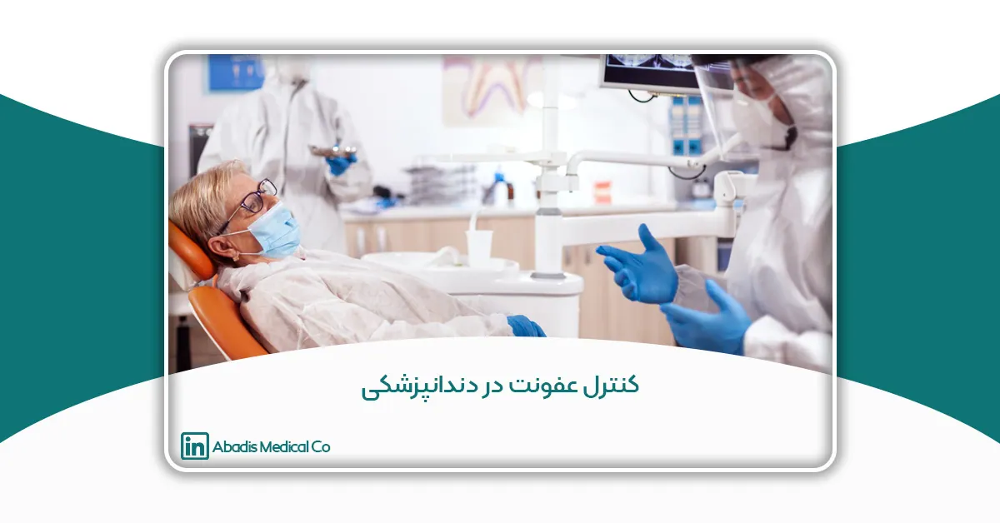

مقدمه
کنترل عفونت یکی از جنبههای حیاتی دندانپزشکی مدرن است که هدف آن حفظ سلامت بیماران و حرفهایهای بهداشت دندان است. با توجه به نزدیکی که دندانپزشکان با دهان بیماران دارند—محیطی که پر از باکتریها، ویروسها و دیگر پاتوژنها است—باید پروتکلهای دقیقی برای جلوگیری از انتشار عفونتها رعایت شود.
از معاینات روتین تا جراحیهای پیچیده در محیطهای دندانپزشکی میتوانند منبعی بالقوه برای آلودگی متقابل باشند. در صورت عدم رعایت احتیاطات لازم، بیماریهای جدی مانند هپاتیت، HIV و عفونتهای تنفسی به آسانی میتوانند از طریق خون، بزاق یا حتی هوا منتقل شوند.
در این مقاله، به بررسی اجزای ضروری کنترل عفونت در دندانپزشکی، از جمله استفاده از تجهیزات حفاظت فردی (PPE)، بهداشت دست، استریلیزاسیون ابزارها، ضدعفونی سطوح و موارد دیگر میپردازیم. با رعایت این دستورالعملها، مراکز دندانپزشکی میتوانند محیطی ایمن برای بیماران و کارکنان فراهم کنند و بالاترین استانداردهای مراقبت را حفظ نمایند.
چرا کنترل عفونت در دندانپزشکی مهم است؟
دندانپزشکان و کادر درمان با دهان بیماران که منبع انواع باکتریها و ویروسها است، ارتباط نزدیکی دارند. بدون رعایت دقیق اصول کنترل عفونت، عوامل بیماریزا میتوانند از یک بیمار به بیمار دیگر یا به کارکنان درمانی منتقل شوند و باعث بروز بیماریهایی مانند هپاتیت B و C، ایدز و عفونتهای تنفسی شوند.
کنترل عفونت تحت نظارت سازمانهای بهداشتی مانند مرکز کنترل و پیشگیری از بیماریها (CDC) و سازمان بهداشت جهانی (WHO) است که دستورالعملهایی را برای کاهش این خطرات تدوین کردهاند.
اجزای کلیدی کنترل عفونت در دندانپزشکی
۱.تجهیزات حفاظت فردی (Personal Protective Equipment)
تجهیزات حفاظت فردی (PPE) یکی از اجزای اساسی کنترل عفونت در دندانپزشکی است. تجهیزات حفاظت فردی به عنوان یک مانع بین حرفهایهای بهداشت دندان و عوامل عفونی عمل میکند و به طور قابل توجهی خطر انتقال پاتوژنها را کاهش میدهد.
تجهیزات حفاظت فردی که در محیط دندانپزشکی به طور رایج استفاده میشوند به ۵ دسته زیر تقسیم میشوند:
- دستکشها:
- متخصصین دندانپزشکی باید در تمامی تعاملات با بیماران از دستکش استفاده کنند. دستکشها باید از موادی مانند لاتکس یا نیتریل ساخته شده باشند و باید برای هر بیمار تعویض شوند تا از آلودگی متقابل جلوگیری شود. استفاده صحیح از دستکش شامل بررسی آنها برای وجود پارهگی یا سوراخ قبل از استفاده و دور انداختن آنها بلافاصله پس از پایان درمان است.
- ماسکها:
- ماسکها برای جلوگیری از استنشاق پاتوژنهای موجود در هوا بسیار مهم هستند. ماسکهای جراحی باید در طول درمانهایی که آئروسل تولید میکنند یا زمانی که نزدیک به بیماران هستید، استفاده شوند. ماسکها باید بینی و دهان را به طور کامل پوشش دهند و بهطور منظم، به ویژه هنگامی که خیس میشوند، تعویض شوند.
- شیلدها و عینکهای محافظ:
- شیلدهای صورت لایهای اضافی از محافظت برای چشمها و صورت در برابر پاششها و آئروسلها فراهم میکنند. عینکهای محافظ باید در صورتی که خطر تماس با خون یا سایر مایعات وجود دارد، استفاده شوند. هر دو باید بعد از هر بار استفاده تمیز و ضدعفونی شوند.
- لباسهای محافظ:
- لباسها یا روپوشهای محافظ برای جلوگیری از تماس پوست و لباس با خون و سایر مواد بالقوه عفونی استفاده میشوند. این لباسها باید مقاوم در برابر مایعات باشند و پس از هر بار استفاده دور انداخته یا شسته شوند.
- پوششهای سر و کفش:
- در شرایط خاص، به ویژه در طول جراحیها، ممکن است از پوششهای سر و کفش برای جلوگیری از آلودگی استفاده شود. این پوششها باید بعد از هر بار استفاده دور انداخته شوند.
اهمیت استفاده و دفع صحیح تجهیزات حفاظت فردی
اثر بخشی تجهیزات حفاظت فردی در کنترل عفونت به طور قابل توجهی تحت تأثیر نحوه استفاده از آن است. باید آموزشهای مناسبی به تمامی کارکنان دندانپزشکی درباره نحوه صحیح پوشیدن و درآوردن PPE ها ارائه شود تا از آلودگی خود جلوگیری گردد.
علاوه بر این، دفع PPE باید طبق پروتکلهای تعیینشده انجام شود. تجهیزات حفاظت فردی استفادهشده باید در مخازن مخصوص زبالههای بیولوژیکی دور انداخته شود تا از هر گونه خطر انتقال عفونت به کارکنان نظافت یا دیگران در مرکز دندانپزشکی جلوگیری گردد.
۲.بهداشت دستها
بهداشت دستها یکی از مهمترین اجزای کنترل عفونت در دندانپزشکی است. شیوههای صحیح شستشو و ضدعفونی دستها به طور قابل توجهی خطر انتقال عوامل عفونی بین بیماران و ارائهدهندگان خدمات بهداشتی را کاهش میدهد.
اهمیت بهداشت دستها
دندانپزشکان به طور مکرر با بزاق، خون و دیگر مایعات بدن بیماران تماس دارند. بنابراین، حفظ استانداردهای بالا در بهداشت دستها برای جلوگیری از آلودگی متقابل ضروری است. مرکز کنترل و پیشگیری از بیماریها (CDC) تأکید میکند که بهداشت دستهای مناسب میتواند از انتشار بسیاری از عفونتهای مرتبط با مراقبتهای بهداشتی جلوگیری کند.
شیوههای صحیح بهداشت دستها
- شستشوی دستها با صابون و آب:
- دستها باید قبل و بعد از هر تعامل با بیمار شسته شوند. CDC توصیه میکند که دستها به مدت حداقل 20 ثانیه شسته شوند و تمامی نواحی دست، از جمله بین انگشتان و زیر ناخنها بهطور کامل تمیز شود.
- مراحل شستشوی مؤثر دستها:
- دستها با آب تمیز و جاری (گرم یا سرد) مرطوب کنید.
- صابون بزنید و خوب کف کنید.
- دستها را به مدت حداقل 20 ثانیه بشویید.
- دستها را بهطور کامل زیر آب تمیز و جاری بشویید.
- دستها را با یک حوله تمیز یا بهصورت هوایی خشک کنید.
- استفاده از ضدعفونیکنندههای دست مبتنی بر الکل:
- زمانی که صابون و آب در دسترس نیستند، میتوان از ضدعفونیکنندههای دست مبتنی بر الکل با حداقل 60% الکل به عنوان جایگزین استفاده کرد. با این حال، ضدعفونیکنندهها نمیتوانند جایگزین شستشوی دستها شوند، بهویژه زمانی که دستها بهطور قابل مشاهدهای کثیف یا آلوده باشند.
- مقدار کافی از محصول را برای پوشش تمامی نواحی دستها استفاده کنید و تا زمانی که احساس خشکی کنید، دستها را به هم بمالید، که این باید حدود 20 ثانیه طول بکشد.
چه زمانی باید بهداشت دستها رعایت شود:
- قبل و بعد از تماس با بیمار.
- قبل از انجام هرگونه درمان یا دستزدن به ابزارهای دندانپزشکی.
- پس از لمس سطوح یا تجهیزات در اتاق دندانپزشکی.
- پس از درآوردن دستکشها.
۳.استریلیزاسیون ابزارها
استریلیزاسیون ابزارها یک فرآیند حیاتی در دندانپزشکی است که هدف آن از بین بردن تمام میکروبها از ابزارها و به این ترتیب از انتقال عفونتها به بیماران و کارکنان بهداشت دندان جلوگیری میکند.
اهمیت استریلیزاسیون ابزارها
ابزارهایی که با خون، بزاق یا غشای مخاطی تماس دارند به عنوان اقلام حیاتی محسوب میشوند و باید پس از هر بار استفاده استریل شوند. استریلیزاسیون صحیح برای محافظت از بیماران در برابر عفونتهای مرتبط با مراقبتهای بهداشتی ضروری است که میتواند منجر به عوارض جدی شود.
روشهای استریلیزاسیون که در دندانپزشکی استفاده میشود:
- اتوکلاوینگ:
- اتوکلاوینگ رایجترین روش استریلیزاسیون در محیطهای دندانپزشکی است. این روش از بخار تحت فشار برای کشتن میکروارگانیسمها استفاده میکند. چرخه معمول شامل گرم کردن ابزارها به دمای 121 درجه سانتیگراد (250 درجه فارنهایت) به مدت حداقل 15 دقیقه است.
- اتوکلاوها باید بهطور منظم نگهداری و برای عملکرد صحیح اعتبارسنجی شوند.
- استریلیزاسیون شیمیایی:
- این روش شامل استفاده از عوامل شیمیایی مانند گلاutaraldehyde یا ortho-phthalaldehyde برای استریلیزاسیون ابزارها است. ابزارها باید به مدت مشخصی در محلول شیمیایی خیس بخورند تا استریل شوند. این روش بهطور کلی برای اقلام حساس به حرارت که نمیتوانند اتوکلاو شوند، استفاده میشود.
- استریلیزاسیون حرارت خشک:
- استریلیزاسیون حرارت خشک شامل استفاده از هوای گرم و بدون رطوبت برای کشتن میکروارگانیسمها است. ابزارها باید به دمای 160 درجه سانتیگراد (320 درجه فارنهایت) به مدت حداقل 2 ساعت گرم شوند. این روش برای برخی از مواد مناسب است اما ممکن است زمانهای طولانیتری نسبت به اتوکلاوینگ نیاز داشته باشد.
- استریلیزاسیون اتیلن اکسید:
- گاز اتیلن اکسید برای استریلیزاسیون اقلام حساس به حرارت استفاده میشود و در دماهای پایین مؤثر است. ابزارها باید به مدت چند ساعت در معرض گاز قرار گیرند و سپس یک دوره تهویه برای حذف گاز باقیمانده انجام شود. این روش نیاز به مراقبت و نظارت دقیق به دلیل سمّیت اتیلن اکسید دارد.
بهترین شیوهها برای استفاده و نگهداری ابزارهای استریلشده:
- تمیز کردن صحیح قبل از استریلیزاسیون: تمامی ابزارها باید برای حذف هرگونه زباله یا مواد ارگانیک قبل از استریلیزاسیون تمیز شوند. این مرحله برای استریلیزاسیون مؤثر حیاتی است.
- استفاده از نشانگرهای استریلیزاسیون: نشانگرهای استریلیزاسیون (مانند نشانگرهای شیمیایی یا بیولوژیکی) باید برای تأیید مؤثر بودن فرآیند استریلیزاسیون استفاده شوند.
- نگهداری: ابزارهای استریلشده باید در یک منطقه تمیز و خشک، بهخصوص در ظروف بسته یا بستهبندی شده برای حفظ استریلیته آنها تا زمان نیاز، نگهداری شوند.
- نظارت و نگهداری منظم: مراکز دندانپزشکی باید یک پروتکل برای نظارت منظم بر تجهیزات استریلیزاسیون داشته باشند تا از کارایی و ایمنی آنها اطمینان حاصل کنند.
۴.ضدعفونیکردن سطوح
ضدعفونیکردن سطوح یک جزء حیاتی از کنترل عفونت در مراکز دندانپزشکی است. ضدعفونیکردن صحیح سطوح به جلوگیری از انتشار پاتوژنها کمک کرده و محیطی امن برای بیماران و حرفهایهای بهداشت فراهم میکند.
اهمیت ضدعفونیکردن سطوح
محیطهای دندانپزشکی معمولاً با بزاق، خون و دیگر مایعات بدن آلوده هستند، بنابراین ضدعفونیکردن سطوح ضروری است. پاتوژنها میتوانند به مدت متفاوتی روی سطوح زنده بمانند، بسته به نوع میکروارگانیسم و ماده سطح. ضدعفونیکردن منظم خطر آلودگی متقابل و انتشار عفونتها را کاهش میدهد.
انواع سطوحی که نیاز به ضدعفونیکردن دارند:
- سطوح بالینی:
- سطوح بالینی شامل صندلیهای دندانپزشکی، دستههای چراغ، میزهای کار و تجهیزات دندانی است که با بیماران تماس دارند یا احتمال آلوده شدن آنها وجود دارد.
- سطوح غیرحساس:
- سطوح غیرحساس سطوحی هستند که با پوست سالم تماس دارند اما با غشای مخاطی تماس نمییابند، مانند کلیدهای روشنایی، کمدها و دستگیرههای در. این سطوح نیز باید بهطور منظم ضدعفونی شوند.
- سطوح نیمهحساس:
- سطوح نیمهحساس سطوحی هستند که با غشای مخاطی یا پوست آسیبدیده تماس دارند. ابزارهایی که استریل نمیشوند اما با این سطوح تماس دارند باید بهطور کامل ضدعفونی شوند.
شیوهها و محصولات مناسب ضدعفونیکردن:
- استفاده از ضدعفونیکنندههای ثبتشده توسط EPA:
- تنها از ضدعفونیکنندههایی که توسط سازمان حفاظت محیط زیست (EPA) ثبت شدهاند و برای اثرگذاری در برابر پاتوژنهای خاص تأیید شدهاند استفاده کنید. این محصولات باید برچسبی داشته باشند که نشان دهد در برابر پاتوژنهای منتقلشونده از خون مؤثرند.
- روش ضدعفونیکردن:
- اول تمیز کردن: سطوح باید قبل از ضدعفونیکردن تمیز شوند تا زباله و مواد ارگانیک حذف شود. تمیز کردن بار میکروبی را کاهش میدهد و به ضدعفونیکنندهها اجازه میدهد بهطور مؤثرتری کار کنند.
- اعمال ضدعفونیکننده: ضدعفونیکننده را طبق دستورالعملهای تولیدکننده اعمال کنید. اطمینان حاصل کنید که سطوح به مدت زمان مورد نیاز که در برچسب مشخص شده است، مرطوب باقی بمانند تا بهطور مؤثر پاتوژنها را از بین ببرند.
- پاککردن و خشککردن: از حولهها یا دستمالهای یکبار مصرف برای پاککردن سطوح استفاده کنید. از استفاده مجدد از حولهها خودداری کنید تا از آلودگی مجدد جلوگیری شود.
- ضدعفونیکردن روتین و نهایی:
- ضدعفونیکردن روتین: سطوح با تماس بالا باید بین بیماران و در فواصل منظم در طول روز ضدعفونی شوند.
- ضدعفونیکردن نهایی: یک فرآیند تمیز کردن و ضدعفونی کامل باید در پایان هر روز انجام شود، شامل تمامی سطوح، تجهیزات و ابزارهایی که در طول روز استفاده شدهاند.
مدیریت پسماند در دندانپزشکی
مدیریت صحیح پسماند برای حفظ یک محیط تمیز و ایمن در مراکز دندانپزشکی بسیار مهم است. این فرآیند شامل جداسازی، حمل و دفع مناسب انواع مختلف پسماندهای تولیدشده در طول درمانهای دندانپزشکی است تا از قرار گرفتن بیماران و کارکنان در معرض پاتوژنها و مواد شیمیایی مضر جلوگیری شود.
اهمیت مدیریت صحیح پسماند
مراکز دندانپزشکی انواع مختلفی از پسماندها تولید میکنند که شامل مواد خطرناک مانند ابزار تیز، پسماندهای شیمیایی و پسماندهای زیستپزشکی است. عدم مدیریت صحیح این مواد میتواند به آلودگی محیطزیست، مشکلات قانونی و خطرات بهداشتی منجر شود. مدیریت صحیح پسماند به رعایت قوانین بهداشتی و ایمنی، کاهش خطر عفونت و ترویج پایداری محیطزیست کمک میکند.
دستههای پسماند در مراکز دندانپزشکی
- پسماند زیستپزشکی:
- پسماندهای زیستپزشکی شامل هر مادهای است که احتمالاً عفونی است، مانند گاز استریل، دستکشها، ماسکهای استفادهشده و دستمالهایی که با خون، بزاق یا دیگر مایعات بدن تماس داشتهاند. این نوع پسماند باید در کیسههای زیستخطر دفع و توسط سرویسهای مجاز مدیریت پسماند پزشکی مدیریت شود.
- پسماندهای تیز:
- پسماندهای تیز شامل سوزنهای استفادهشده، اسکالپلها و هر ابزار تیز دیگری است که خطر صدمه یا عفونت ایجاد میکند. این پسماندها باید در ظروف مقاوم به سوراخشدن و دارای برچسب مناسب برای دفع پسماندهای تیز قرار داده شوند.
- پسماندهای شیمیایی:
- مراکز دندانپزشکی از مواد شیمیایی مختلفی مانند ضدعفونیکنندهها، آمالگام و مواد ظهوردهنده فیلمهای رادیوگرافی استفاده میکنند. این مواد در صورت مدیریت نادرست میتوانند خطرناک باشند. باید برای پسماندهای شیمیایی ظروف جداگانه فراهم شود و دفع آنها باید مطابق با مقررات محیطزیستی محلی انجام شود تا از آلودگی آب و خاک جلوگیری شود.
- پسماندهای عمومی:
- پسماندهای عمومی شامل موادی است که غیرخطرناک هستند؛ مانند کاغذ، بستهبندی و اقلام یکبار مصرفی که با خون یا مایعات بدن آلوده نشدهاند. این پسماندها میتوانند با پسماندهای عادی شهری دفع شوند.
راهنمایی برای دفع و مدیریت صحیح پسماند
- جداسازی پسماند:
- پسماندها باید در محل تولید بهدرستی جداسازی شوند. از ظروف کدگذاریشده با رنگهای مختلف برای انواع پسماند استفاده کنید—کیسههای زیستخطر برای پسماندهای عفونی، ظروف مقاوم به سوراخشدن برای ابزارهای تیز و سطلهای جداگانه برای پسماندهای شیمیایی و عمومی—.
- برچسبگذاری و نگهداری:
- تمام ظروف پسماند باید بهوضوح با نوع پسماندی که در آن قرار دارد برچسبگذاری شوند. پسماندهای تیز و زیستپزشکی باید در محلهای امن و دور از دسترس بیماران تا زمان دفع نگهداری شوند.
- خدمات دفع پسماند:
- پسماندهای زیستپزشکی و شیمیایی باید توسط سرویسهای مجاز مدیریت پسماندهای پزشکی دفع شوند. اطمینان حاصل کنید که مرکز دندانپزشکی شما با قوانین محلی در مورد حمل و دفع پسماندهای خطرناک مطابقت دارد.
- آموزش کارکنان:
- کارکنان دندانپزشکی باید آموزشهای لازم در مورد جداسازی، حمل و دفع پسماندها را دریافت کنند. این آموزشها به اطمینان از رعایت پروتکلها برای کاهش خطرات و حفظ یک محیط امن کمک میکند.
آموزش و تربیت کارکنان
اجرای صحیح پروتکلهای کنترل عفونت به دانش و عملکرد تیم اجرایی بستگی دارد. آموزش مناسب و تربیت مداوم کارکنان دندانپزشکی، پایههای اصلی حفظ استانداردهای ایمنی بالا و جلوگیری از انتقال عفونت است. یک تیم آموزشدیده علاوه بر تضمین رعایت مقررات، خطرات را به حداقل میرساند و اعتماد بیماران را جلب میکند.
اهمیت آموزش کارکنان در کنترل عفونت
- رعایت استانداردها: آموزش تضمین میکند که کارکنان با دستورالعملهای کنترل عفونت از سوی سازمانهای معتبری مانند CDC و WHO هماهنگ هستند.
- کاهش خطرات: آموزش صحیح، احتمال انتقال عفونت میان بیماران، کارکنان و جامعه را کاهش میدهد.
- افزایش کارایی: کارکنان آموزشدیده وظایفی مانند استریلیزاسیون، دفع پسماند و استفاده از PPE را با اطمینان بیشتری انجام داده و به بهبود گردش کار و ایمنی کمک میکنند.
اجزای اصلی یک برنامه آموزشی قوی
- آموزش اولیه برای کارکنان جدید:
- مروری جامع: آشنایی کارکنان جدید با پروتکلهای کنترل عفونت، مانند بهداشت دستها، استفاده از تجهیزات حفاظت فردی (PPE) و روشهای استریلیزاسیون.
- آموزش مبتنی بر نقش: ارائه آموزشهای متناسب با نقش کارکنان، تا همه افراد مسئولیتهای خاص خود در حفظ استانداردهای بهداشتی را درک کنند.
- آموزش مداوم:
- کارگاهها و سمینارهای منظم: برگزاری جلسات دورهای برای مرور بهترین شیوهها و معرفی بهروزرسانیهای جدید در دستورالعملهای کنترل عفونت.
- ماژولهای آموزشی آنلاین: فراهم کردن دورههای آنلاین برای کارکنان، تا بتوانند مباحث کلیدی را بهصورت مستقل و در زمان دلخواه مرور کنند.
- آموزش فناوریهای جدید: آموزش کارکنان در استفاده از تجهیزات پیشرفته استریلیزاسیون، نوآوریهای PPE و ابزارهای دندانپزشکی بهروز.
- آموزشهای پیشرفته و تخصصی:
- ارائه دستورالعملهای دقیق برای انجام روشهای پرخطر مانند جراحیهای دهانی یا درمانهای تولیدکننده آئروسل.
- آموزش آمادگی برای مدیریت شرایط اضطراری مانند شیوع عفونت یا قرارگیری تصادفی در معرض عوامل خطر.
- مستندسازی و نظارت:
- ثبت سوابق آموزشی: ثبت حضور، مباحث پوشش داده شده و نتایج ارزیابیهای تمامی جلسات آموزشی و استفاده از این سوابق برای شناسایی نقاط ضعف.
- ارزیابی مهارتها: ارزیابی منظم دانش کارکنان از طریق ممیزی، آزمونها و بازبینی عملکرد، و ارائه آموزشهای اصلاحی در صورت نیاز.
بهترین روشها برای کنترل عفونت در محیط دندانپزشکی
- دفع مناسب زبالهها: تمامی زبالههای پزشکی، بهویژه اقلام آلوده به خون یا مایعات بدن، باید در مخازن زبالههای بیولوژیکی از جمله کیسه ساکشنهای یکبار مصرف دفع شوند.
- آموزش کادر درمان: کارکنان دندانپزشکی باید بهصورت منظم آموزشهای لازم در زمینه کنترل عفونت را دریافت کنند تا از جدیدترین دستورالعملها مطلع باشند.
- واکسیناسیون کادر درمان: دندانپزشکان و کارکنان آنها باید در برابر بیماریهای عفونی مانند هپاتیت B، آنفولانزا و COVID-19 واکسینه شوند تا خطر انتقال عفونت در کلینیک کاهش یابد.
- ممیزیهای منظم: انجام ممیزیهای داخلی منظم از شیوههای کنترل عفونت به رعایت استانداردها کمک کرده و میتواند نقاط ضعف را شناسایی کند.
نتیجهگیری
کنترل عفونت در دندانپزشکی یکی از ارکان اساسی برای حفظ سلامت بیماران، کارکنان و محیط کلینیک است. با توجه به اهمیت این مسئله، لازم است که دندانپزشکان و تیم درمانی، از ابزارهای پیشرفته، پروتکلهای بهداشتی صحیح و روشهای نوین برای جلوگیری از انتشار عفونت استفاده کنند. این اقدامها نه تنها به کاهش خطرات عفونت کمک میکنند، بلکه موجب افزایش اعتماد بیماران و رضایت بیشتر آنها میشود.
در دنیای دندانپزشکی امروزی، حفظ ایمنی و سلامت بیماران و کارکنان تنها از طریق رعایت دقیق پروتکلهای کنترل عفونت ممکن است. برای دستیابی به این هدف، باید به تمام جنبههای این فرآیند، از آموزش کارکنان و بیماران گرفته تا استفاده از تجهیزات پیشرفته، توجه ویژه داشت. تنها با رعایت این اصول، میتوان به یک محیط دندانپزشکی ایمن و سالم دست یافت.